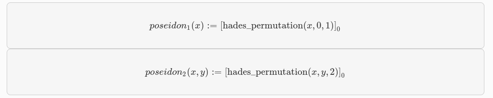

Poseidon hash Starknet
La función Poseidon hash es un ZK-friendly Hashing, pertenece a una familia de funciones hash diseñadas para ser muy eficientes en circuitos algebraicos. Como tal, pueden ser muy útiles en sistemas ZK proof como STARKs y otros.
Poseidon es una construcción de esponja basada en la permutación Hades, la estrategia de diseño Hades se basa en dividir el proceso en diferentes rondas para garantizar la seguridad y eficiencia del algoritmo:
- En las primeras rondas, denominadas
Rf, se aplican lasS-boxesal estado completo. LasS-boxesson funciones no lineales que mezclan y transforman los datos. En esta etapa inicial, se busca lograr una alta dispersión de los bits en el estado. - Después de estas rondas iniciales, se llevan a cabo las rondas intermedias, denominadas
RP. En cada ronda intermedia, se aplica únicamente unaS-box, mientras que el resto del estado permanece sin cambios, es decir, se utiliza una función identidad en lugar de lasS-boxesfaltantes. Esta simplificación reduce el costo computacional y la complejidad del algoritmo. - Finalmente, en las últimas rondas, nuevamente se utilizan las
S-boxespara el estado completo. Estas rondas finales, al igual que las rondas iniciales, permiten obtener una mezcla y transformación adicional de los datos.
Para una revisión más profunda sobre su integridad en sistema de Proof pueden revisar POSEIDON: A New Hash Function for Zero-Knowledge Proof Systems (Updated Version).
La versión de Poseidon utilizada en Starknet se basa en una permutación de estado de tres elementos.
El campo ùîΩ, sobre el que se definen las declaraciones aritm√©ticas que utilizan Poseidon. A menudo es determinado por el sistema de prueba ZK. Lo m√°s probable es que sea un subgrupo de primer orden del grupo de puntos de una curva el√≠ptica. Poseidon mapea secuencias de elementos ùîΩ a una secuencia de longitud fija de elementos ùîΩ.
A continuación, se define el Poseidon hash de hasta 2 elementos, y también se menciona una versión que admite un número arbitrario de entradas.
